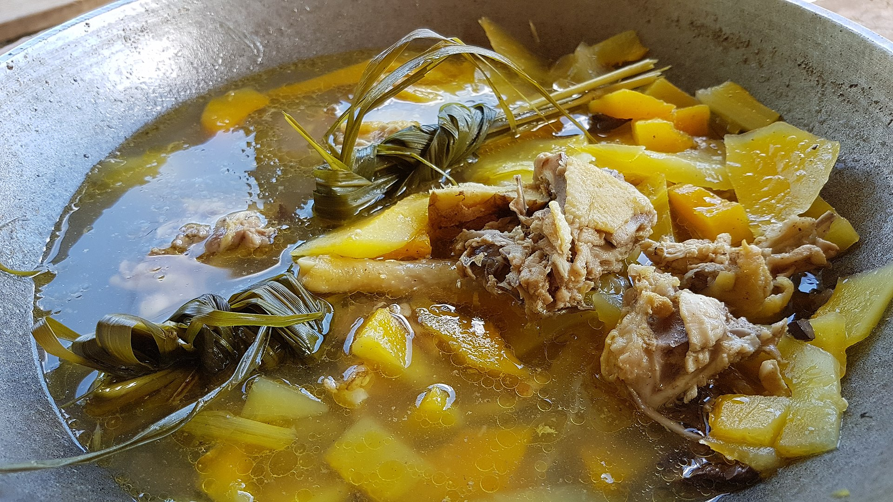

Tinola

Description
Tinola is a Filipino soup usually served as a Main course with white rice.[1] Traditionally, this dish is cooked with chicken or fish, wedges of papaya and/or chayote, and leaves of the siling labuyo chili pepper in broth flavored with ginger, onions and fish sauce.
Ingredients
- 1 tablespoon canola oil
- 1 small onion, peeled and sliced thinly
- 3 cloves garlic, peeled and minced
- 2 thumb-sized fresh ginger
- 1 (3 to 4 pounds) whole chicken, cut into serving pieces
- 2 tablespoons fish sauce
- 5 cups water
- 1 small green papaya, pared, seeded and cut into 2-inch wedges
- 1 bunch fresh spinach leaves, stems trimmed
- salt and pepper to taste
Steps
- In a pot over medium heat, heat oil. Add onions, ginger, and garlic and cook until softened.
- Add chicken and cook, stirring occasionally, for about 5 to 7 minutes or until chicken starts to change color and juices run clear.
- Add fish sauce and cook, stirring occasionally, for about 1 to 2 minutes.
- Add water and bring to a boil, skimming scum that floats on the top. Lower heat, cover and simmer for about 30 to 35 minutes or until chicken is cooked through.
- Add papaya and cook for about 3 to 5 minutes or until tender yet crisp.
- Season with salt and pepper to taste.
- Add spinach and push down into broth. Cook until just wilted. Serve hot.
Nutrition Information
- Calories: 513kcal
- Carbohydrates: 16g
- Protein: 39g
Fat: 33g
- Saturated Fat: 9g
- Cholesterol: 140mg
- Sodium: 930mg
- Potassium: 1062mg
- Fiber: 4g
- Sugar: 8g
- Vitamin A: 8959IU
- Vitamin C: 76mg
- Calcium: 143mg
- Iron: 4mg
Source: kawalingpinoy.com